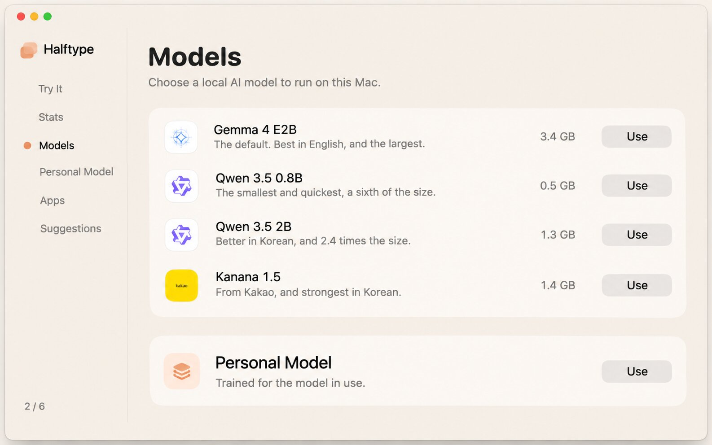
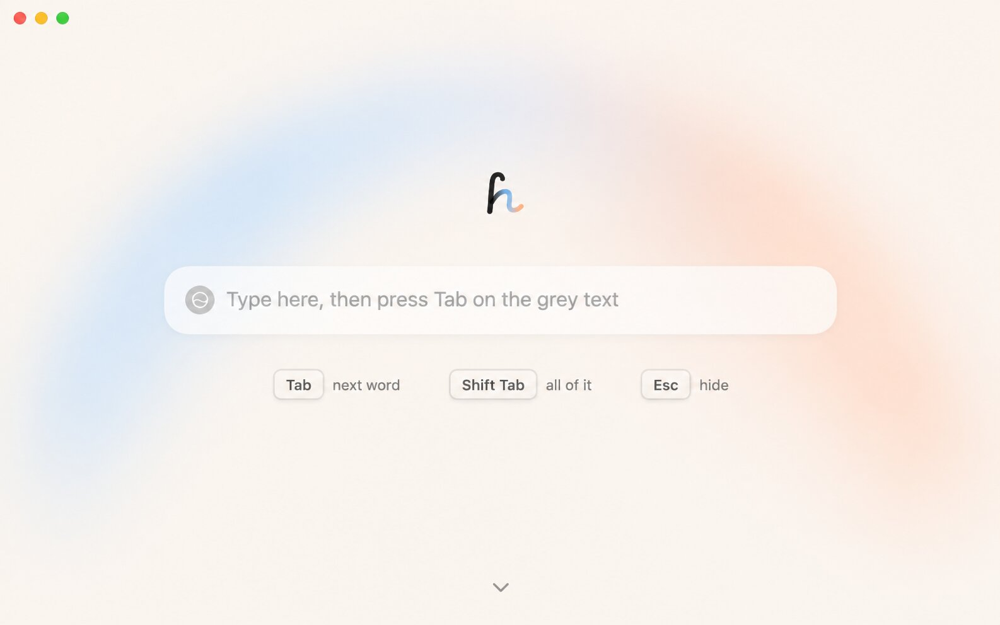

Halftype's window: a calmer first page, and a page per setting
John: "remove the power icon and the model … do we need the "working" text under? Shouldn't we just have the instructions? … make the default window size a little bigger … the core cards should be a page each … [Models under the sidebar button] should never happen … maybe indicators on the left of what page we're on and how many (and maybe scroll to snap per page)."
- The overlap is structural, not a nudge. Settings scroll under a transparent title bar, and the sidebar button floats over it at x 84. Any layout where pages own the title-bar strip (B, C, D) fixes it; today's needs a blurred title bar to fix it.
- Pick B: a sidebar that stays, one page each. Click a page, see that page; no scroll in between. The sidebar is the "where am I, and how many" indicator. C (your dot rail + snap) works for short pages but fights pages taller than the window (General today is 1,600 pt tall at 900 wide).
- Split into 7 pages: Try It · Stats · Models (with Personal Model under the model it was trained for) · Suggestions · Apps · Privacy · General.
- First page: cut the model chip, the power button and "Working." One instruction line in keycaps, always there; the line under changes only when something's wrong or when your first Tab worked.
- Default size 860 × 600 (today 720 × 500, minimum 640 × 440). On a TV at a scaled resolution 720 pt is small; 860 still fits a 13" MacBook Air (1470 × 956) with room.
1 · The first page
What the text says today, and when (from FieldPage and App.fieldLine). Struck through goes; green is new.
| When | Placeholder in the field | Line under the field | Proposed (option F2) |
|---|---|---|---|
| Halftype is off | Halftype is off | — | Placeholder "Halftype is off" + a Turn On button under it (the power button's one job) |
| Model downloading / loading | Type here once the model is ready | Downloading Gemma 4 E2B: 41% of 3.4 GB · bar · "You can close this window." | Same, and the bar (keeps the only progress the chip used to show) |
| Ready, field empty or typing | Type here, then press Tab on the grey text | Working. | Placeholder "Type anything." · line: Tabnext word ⇧ Taball of it Eschide, always shown |
| Ready, model not sure yet | — | Working. Not sure enough to suggest yet. | The keys line (not being sure is normal) |
| A ghost is showing | — | Tab takes a word. Shift-Tab takes it all. Esc hides it. | The keys line (the same words, now always there, so nothing jumps when a ghost appears) |
| Your first Tab worked | — | That's it. Halftype works like this in almost any app. [Start at Login] | Same: the one reward moment |
| Something in the way (Secure Input, a 2-Set problem…) | — | The reason, e.g. "Korean suggestions need Apple's 2-Set Korean layout." | Same, in place of the keys line |
| macOS predictions on | — | macOS shows its own grey predictions too. [Turn Them Off…] | Same |
The model chip's other job, switching models, moves to Models; on/off stays in the menu bar and the sidebar's switch.
F1Today
The chip and power button read as a chat app's controls; "Working." says nothing you can act on.
F2Instructions only (recommended)
Field, then the three keys, nothing else. The keys never move. Problems and the first-Tab "That's it" take the keys' place. Small change: delete controls, swap two strings.
F3Keys inside the field
The keys sit where the chip was (onboarding's lessons already draw keycaps there). Tighter, but the field looks busier while you type.
2 · Settings: a page each
Every option below uses the same 7 pages. Click the sidebar, rail or tabs; they're live. Personal Model sits under the model it was trained for, so it's clear an adapter only works with that model.
AToday: one scroll, floating card
Models
Paused Apps
Red: the card scrolls up under the title bar and the sidebar button, which is your screenshot. Fixing it here means a blurred title bar strip, which eats the arch.
BSidebar that stays, one page each (recommended)
The macOS norm (System Settings, Ollama, Raycast). The sidebar shows where you are and how many pages; content starts below the title bar, so nothing can slide under it. Try It keeps its arch, full height of the content area. Build: a NavigationSplitView or an HStack replacing the ScrollView and Place; about −80 lines.
CFull-window pages, snap, dot rail
Your idea: scroll snaps a page at a time; dots on the left (names on hover) and "3 / 7". Lovely for short pages, but Privacy or General taller than the window either clips or needs a scroll inside a scroll, and trackpad snap feels sticky. SwiftUI: .scrollTargetBehavior(.paging).
DTabs across the top
Classic Mac preferences (Safari, Xcode). Full width for content, but 7 tabs crowd 640 pt, and Try It as a "tab" reads oddly next to settings.
ETry It alone; Settings opens the sidebar
The first page has no chrome at all; a Settings button (and ⌘,) switches the window to B's layout, with "← Try It" at the top of the sidebar. Purest first page, one extra click to settings.
3 · Image ideas (Codex)
IModels as its own page, with a rail

Worth taking: the page title big and alone, models in one quiet pane, and a plain-text sidebar with only a peach dot for "here" (no icons). Its "2 / 6" in the corner is the count you asked for, cheaply. Prompt: images/prompts/I.txt.
JA calmer first page

Worth taking: F2 almost exactly, with the keycaps a size larger and spaced wider, which reads better from a TV. Prompt: images/prompts/J.txt.